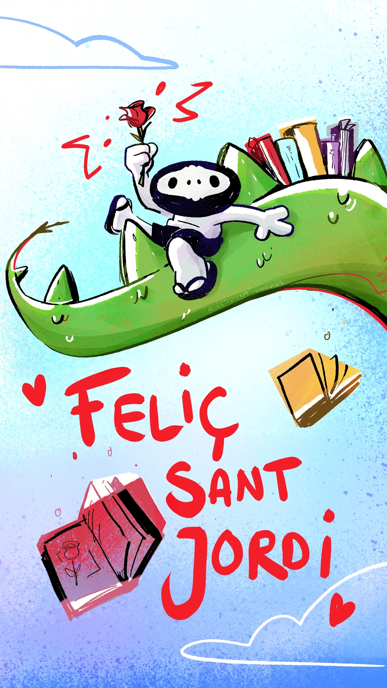
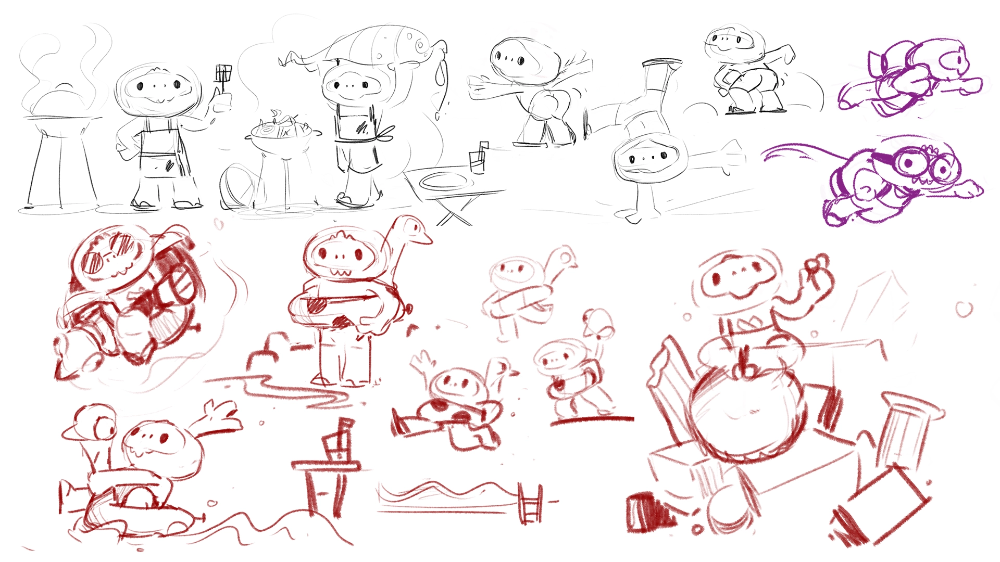
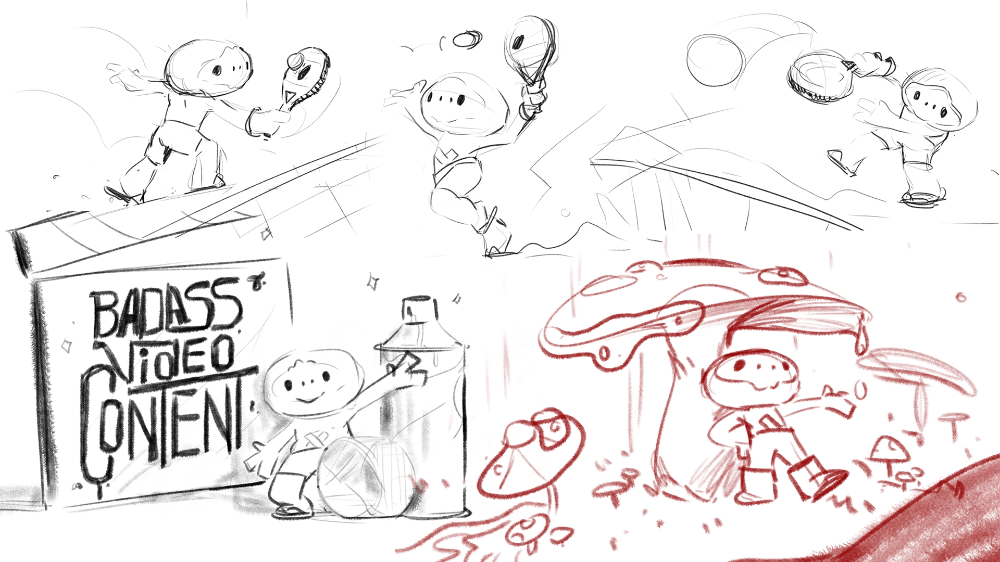
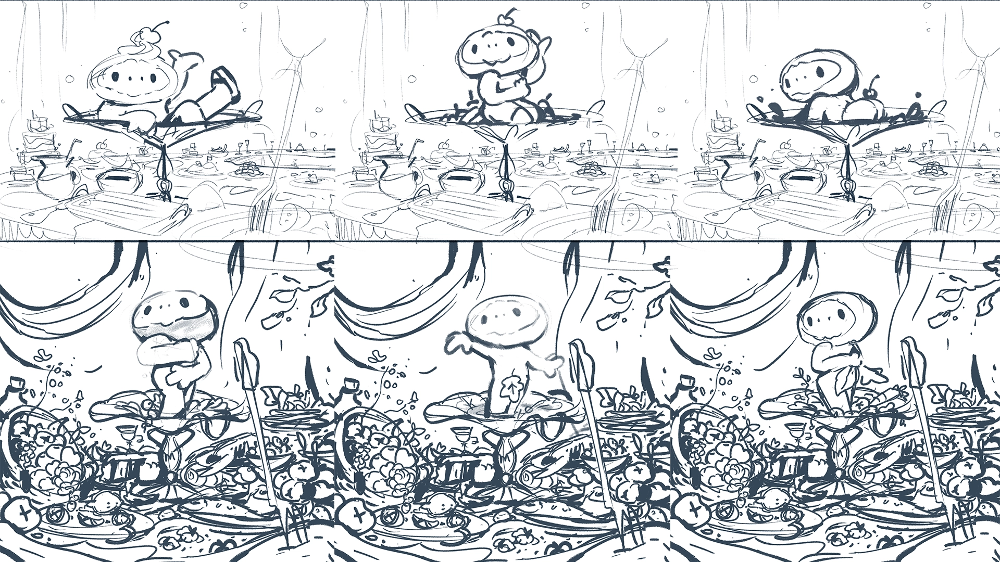

While working at Linkvids I got the chance to develop Loss the
mascot of the company, next to Pep Suri (creator and CEO) and Edu
Coll (visual development artist). We produced a series of animated
postcards playing with different techniques and softwares that
allowed us to explore its personality and physicality.
In the video above, I animated Loss jumping around a 3D modeled
logo of Linkvids using Blender's GreasePencil.
Loss shows us that mistakes are no loss, every error can lead to a
new path of creation.
Loss are born from every discarded idea each of us have for a
client or a project. Ideas are like energy: they can't be
destroyed, they just they just transform. All the love and care
put into them isn't lost, instead, it turns into Loss, little
creatures that roam around with no purpose but to enjoy life and
be mischievous.
The next video shows us how Loss comes alive, storyboarded and
animated by me:
Loss loves to sprout in different settings, wanted or not.
Below, on the left, Loss appears in a baroque paintinng,
in an ode to sensuality.
The background was done by Edu Coll, while I animated Loss and
did the final compositing.
To achieve the oil painting look we mixed handpainting frames in
photoshop with EBSynth.
On the left, Loss discovers the wonders of nature. Edu
Coll did the background and the 3D modelling and rigging, while I
did the 2D and 3D animation, FX, and coompositing.
Below, another three postcards we produced at Linkvids.
The first one was the first animation I did of the character as a
concept of what we could make .
For the one in the middle, I did the 2D FX and the compositing,
while Edu Coll did the 3D design, rigging and animation and
illustration.
The last one is an illustration I did for social media celebrating
St Jordi, a national holiday in Catalunya.

Want to know how we made them?
Here is a video I made of the process behind the baroque painting
postcard, with all the material created by Edu Coll and me:
And last but not least,
some of my favourite sketches we made to develop the project
and some of the Loss we lost while we were creating Loss:



That's it! Not much left to see here... maybe want to try browsing to
another project?
These are some of the projects I have worked on for the last 5 years.
Some are work for clients and some are collaborative with friends.
Every one of them has lead me to develop new skills and to get to know
new sides of myself, which is scary and exciting at the same time… and
also kind of addictive. Oh well! I guess I am in this stuff for life
now… I hope I can continue learning and creating the best way I know:
surrounded by people. If you want to see more of my work, check rest
of this portfolio.